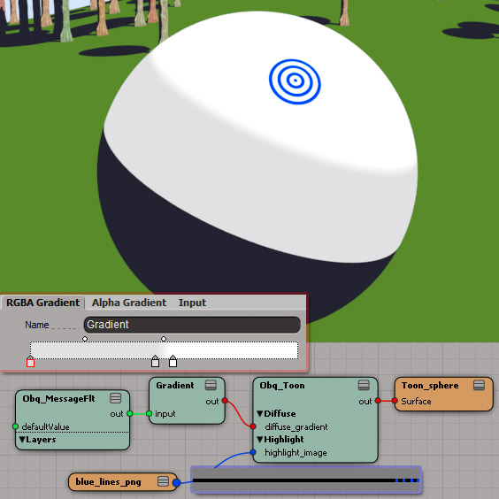
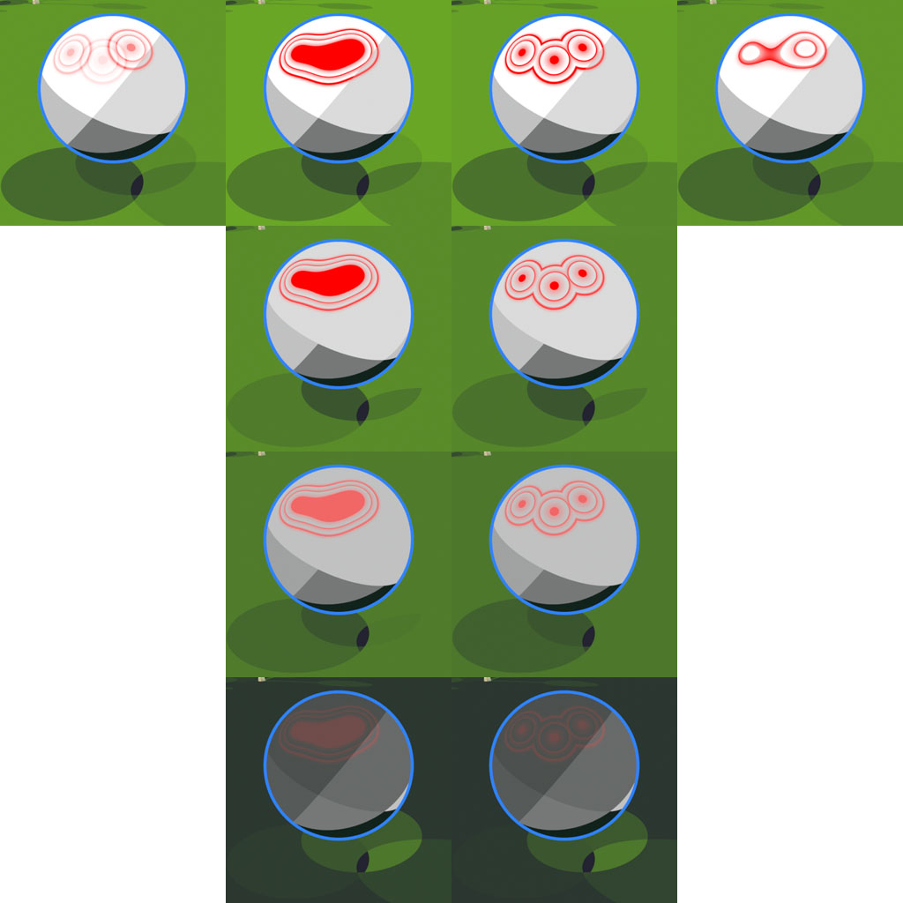
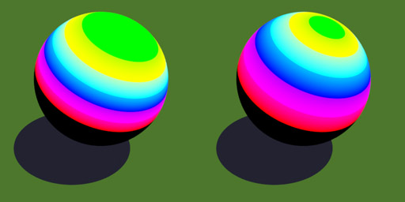

Obq_Toon
Class
Material
Output
Color RGB
Synopsis
A toon shader with a lot of options. A dot product for each component (diffuse = NdotL, highlight = NdotH and rimlight = NdotV) is calculated to determine the shading and then remapped according to some rules. You can, for example, remap the shading with a gradient node or a gradient in an image. This way, you can create specific toon looks and funky highlights.

A simple toon example.
Usage
For a classic toon look, use it exactly like the Mental Ray toon shader with the coverage and softness parameters. If you want to remap using a gradient, you must use the Gradient node from the Mixers - Processing group and use an Obq_MessageFlt node with Obq_Toon preset as input. The port is only accessible via the render tree.

Obq_Toon using a gradient to remap diffuse and an image to remap highlight.
Note : Alpha values of images and gradients are not used, you should fade to back towards U=0.
Globals
Ambient Color [ambient_color]
This is a simple constant.
Ambient Scale [ambient_scale]
Let's you adjust the Ambient mix.
Multiply by scene ambience [ambient_multAmbience]
When checked, this multiplies the ambient color by the scene ambience.
No Internal Ambient [ambient_noInternal]
With a non-opaque object, check this to disable the ambient contribution of back-facing polygons. See opacity for example.
Opacity Color [opacity]
This is the opacity of the shader.
Note : Use the No Internal component parameters to activate or deactivate contribution of back-facing polygons.

Left is an opaque sphere, in the middle a semi-opaque sphere and right, semi-opaque sphere with all _noInternal checked.
Compositing [global_compMode]
This tells the shader how to composite ambient, diffuse, highlight and rimlight results together in that order.
| • | Add | : | this will add all the results. | |
| • | Over | : | this will mix the results one by one using the rule : out = A + (1-A.alpha)*out, where A.alpha is the channel with the greatest value. | |
| • | Max | : | for each channel, the greatest value of the components will be used. | |
| • | Screen | : | for each channel, out = A + out - A*out for values of A and out [0,1], else the greatest value between the two. |

A sphere with grey diffuse, reddish highlight and bluish rimlight. From left to right: Add, Over, Max and Screen mode. There is no apparent highlight on the third sphere because the red channel of the diffuse is higher than the red channel of the highlight.
Loop Mode [global_loopMode]
This allows the user to evaluate the shading+remap either at each light samples or after all the lights were sampled. This is useful to change the look of multiple lights setups.
| • | Add all values | : | this is what you would expect normally, the shading+remap is calculated for each light sample and then added. | |
| • | Use sum for value | : | The sum of the samples will be use to calculate shading+remap. | |
| • | Use max for value | : | The single greatest value of the samples will be use to calculate shading+remap. | |
| • | Remap value | : | This is a little bit like the second option; shading is calculated at each sample, but remapped only at the end. | |
| • | Remap inputs | : | This is like Remap value but instead of using built-in shading, it uses the _shaderInput port as value. Only diffuse and highlight ports are available. |

Sphere and ground lit by 3 lights of intensities 0.5, 0.75 and 1. From left to right : Add all values, Use sum for value, Use max for value and Remap value. From top to bottom, Global Loop Light Mode : Add, Add (Clamped), Maximum and Multiply.
Note : When using Remap inputs, remap parameters Coverage, Softness and Exponent are still activated, so you should have them equal 1.
Lights [global_loopLightMode]
Enabled when using options 2 or 3 from the previous parameter. This tells the shader what to do with the light samples.
| • | Add | : | add all the light samples. | |
| • | Add (Clamped) | : | add all the light samples but clamp to one. | |
| • | Maximum | : | use the single greatest light sample. | |
| • | Multiply | : | multiply them all together. |
Remap [global_remapMode]
Enabled when using one of the two remap loop modes. This tells the shader what to do with the input shaders.
| • | Use Average | : | use the average RGB intensities of the input as dot. | |
| • | Use Luminance | : | use the luminance of the input as dot using the equation : Luminance = 0.2126*R + 0.7152*G + 0.0722*B. | |
| • | Use Each Channel | : | calculates the dot for each channel and remaps them. |
Note : Only diffuse and highlight ports are available and evaluation is done only if a shader is plugged into the port as optimization.

From left to right : input standard, Use Average, Use Luminance and Use Each Channel. From top to buttom, multiplied by normalized input color : unchecked and checked.
Multiply by Normalized Input Color [global_remapMultByColor]
When checked, this multiplies the result by the HSV color of the input using V=1.
Note : This is only enabled with the two remap loop modes in Use Average or Use Luminance remap modes.
Multiply by Light Color [global_multByLightColor]
When checked, this multiplies all light samples by the light color.
Note : In theory, this should always be checked. If it's off, you wont have any shadows.
Clamp Before Compositing [global_clamp]
When checked, this clamps the values of the accumulated results before compositing a new component.
Note : This helps solidify colors.
Check To Render Map Image (Use diffuse) [output_imageOnUV]
With this checked, you can render map the gradient or the remapped image of the Diffuse tab. Simply create a grid, assign the material of the object with the desired gradient, for example, add planar XZ texture projection, enable this option and do a render map using Kettle Bake.
Note : Once this is done, you should add 2 pixels to the left of the image with the same value as the previously first pixel and do the same to the right with the last pixel.
Diffuse/Highlight/Rimlight
The diffuse component uses the N dot L of the Lambertian model, the highlight component uses the N dot H of the Blinn-Phong model and the rimlight uses the N dot V to to determine shading. Once this shading is calculated, it is remapped with respect to the Mode.
Color [_color]
This is the color of the diffuse component.
Scale [_scale]
This is the scale of the diffuse component.
Exponent [highlight_exponent]
The bigger the exponent, the smaller the highlight.
Coverage [_coverage]
This will somewhat scale down the span of the lit portion of the object.

Different values of Coverage = {1.0, 0.5, 0.25, 0.0}.
Note : dot = 1-(1-dot)/coverage
Softness [_softness]
This will somewhat push highest values down. Use a value of 0 for a classic toon look.

Different values of Softness = {1.0, 0.5, 0.25, 0.0}.
Note : dot = dot/softness. When used for highlight, if you put 0 here you should use a Coverage of less than 1,
No Internal [_noInternal]
This will deactivate contribution of back-facing polygons.
Linearize Dot Product [_linearDot]
This will linearize the resulting dot product : dot= 1-acos(dot)/(pi/2).

Left is not linearized, while right is. The stripes on the right image all have a similar thickness instead of being blown in the green and crunched in the red.
Mode [_mode]
This will tell how to remap the dot product. Coverage and Softness are used on all of the modes.
| • | Parameters | : | Remap is done according to Coverage, Softness and Exponent only. | |
| • | Image | : | the shading will be remapped using its value as the U of an image. | |
| • | Gradient | : | the shading will be remapped using its value as the input value of a Gradient node. |
Note : You must use the Gradient node from the Mixers - Processing group and use as input the Obq_MessageFlt node using the Obq_Toon preset. The port is only accessible via the render tree.
Use Auto Remap [_autoRemap]
This will calculate the proper left-right remap based on resolution. Basically, it puts the left border at -2/width and right at 1+2/width to ensure there will be no artefacts.
Note : When creating image gradients, add 2 pixels to the left of the image with the same value as the previously first pixel and do the same to the right with the last pixel.
Remap Left Value [_imageRemapLeft]
This is the U value for the left border of the image.
Note : Remap is done after Bias and Gain.
Warning : Using 0 for left and 1 for right will cause artefacts.
Remap Right Value [_imageRemapRight]
This is the U value for the left border of the image.
Remap Bias [_imageRemapBias]
This bias will be applied to the U value before accessing the image.
Remap Gain [_imageRemapGain]
This gain will be applied to the U value before accessing the image.
AOVs
You can also render all components in seperate AOVs.
Note : If a recently created AOV doesn't show in the list, close the shader UI and reopen it.
Create/Set default AOVs with prefix
Pressing this button will set the AOVs' names, or create them if they do not exist, using the prefix and the default names rule.
Contour AOV
This can help you do contours in compositing by edge detecting its channels.
| • | Red | : | Depth. | |
| • | Green | : | Polygon ID. | |
| • | Blue | : | Object ID. | |
| • | Alpha | : | Incidence. |
Note : Object IDs start at 1 in order to have the background equal 0.
Set Alpha to Over Alpha [putAlphaInFb]
When checked, an RGBA AOV will have an alpha equal to the alpha used for compositing in over mode.
Normalize Object ID in Contour [normalizeObjectID]
When checked, the object IDs used for the blue channel in the contour AOV will be normalized.